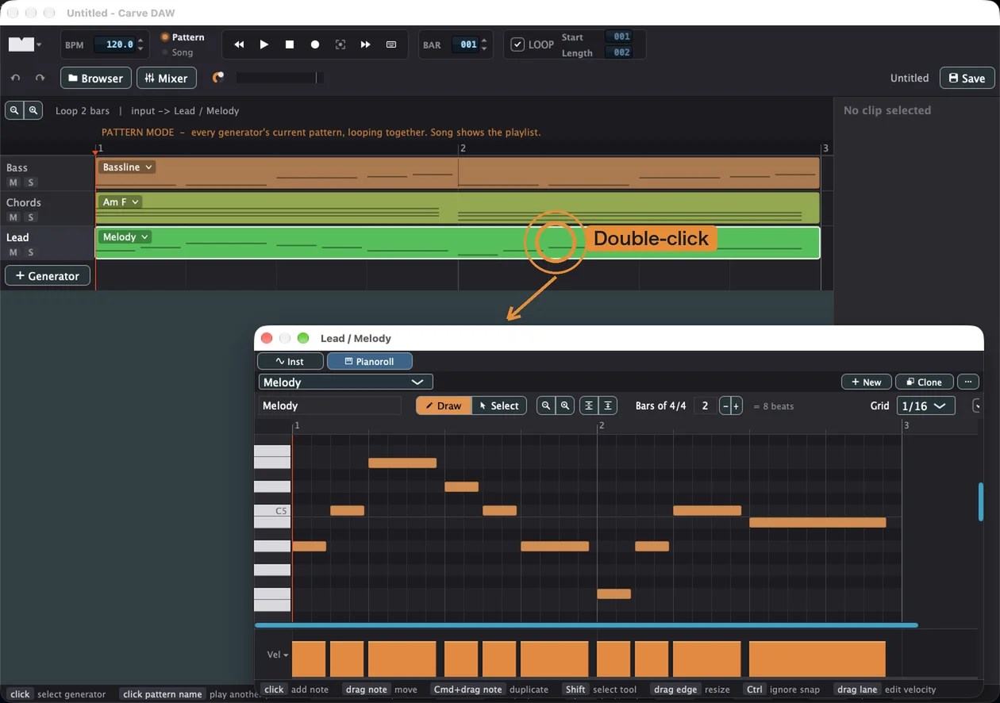

Quick Start
From adding an instrument to writing a phrase, arranging it into a song, making it sing and exporting it. Follow these steps once and you will know how Carve DAW works.
When the app starts, an empty song (Untitled) is open. File and song commands are in the menu under the logo at the top left.
STEP 1
Add a generator
In Carve DAW, anything that makes sound (a synth, a drum kit, a singing voice, a sampler) is a generator. Each generator plays one part of the song.
- Click + Generator at the bottom of the left-hand column of the main window.
- Choose an instrument from the submenus. For drums, Drums › Drum Synth is a good start; for bass or chords, try Synth & Keys › Slate Synth.
- A new row appears in the left-hand column. That row is the generator.
A new generator comes with an empty pattern, so you can start writing right away.
The generator window
Double-click the row's name to open the generator window. The two tabs at the top switch between its views.
- Inst … the instrument's controls. The Presets menu at the top has ready-made sounds (Factory Presets).
- Pianoroll … where you write the pattern (next step).
Right-click a row's name to rename, duplicate or delete the generator. A row's M and S buttons are mute and solo.
STEP 2
Write a pattern
A pattern is a phrase of a few bars that a generator plays. A generator can have as many patterns as you like: one for the verse, one for the chorus, and so on.
- Open the Pianoroll tab of the generator window.
- With the Draw tool (D), click the grid to place a note. Drag a note to move it; drag its right edge to change its length.
- Right-click a note to delete it. With the Select tool (E), drag a box around notes to select and move several at once.
- Set the pattern's length with Bars of 4/4 and the grid's resolution with Grid.
Open a pattern from the timeline
You can also open the generator window from the main window's timeline. In Pattern mode, each generator's row shows the pattern it is playing. Double-click that pattern and the generator window opens on its Pianoroll tab. In Song mode, double-clicking a clip in the playlist does the same (Step 3).

Click the pattern name at the start of a row to switch which pattern that row plays.
Listen to it
Check that Pattern is selected in the toolbar at the top of the main window, then press Space. Every generator's current pattern loops at the same time, so you can listen while you write.
Make more patterns
At the top right of the Pianoroll tab, + New makes an empty pattern and Clone makes a copy of the current one. Switch between patterns and rename them with the box at the top left.
In a drum generator, the rows are labelled with the kit's sounds, such as kick and snare, instead of piano keys.
STEP 3
Arrange your patterns
Once you have patterns, lay them out in the playlist to build a song.
- Switch to Song in the toolbar. The main window shows the playlist.
- With the Paint tool (B), drag along a generator's row. That generator's selected pattern is placed as clips across the bars you drag over.
- Drag a clip to move it, or drag its right edge to change its length (longer than its pattern, it repeats). ⌘D duplicates; Delete or a right-click removes.
- Double-click a clip to open its pattern on the generator window's Pianoroll tab and edit it.
- Click the ▾ at the top right of a clip to swap in a different pattern.
- Press Space to play and stop the song.
Tick LOOP in the toolbar to repeat just the range set by Start and Length — handy for working on one section.
Change the tempo with BPM at the left of the toolbar.
STEP 4
Add lyrics
A singing generator sings the lyrics you give the notes in its piano roll.
Add a singing generator
Choose one from + Generator › Voice.
- Modelled Voice (EN) … a built-in voice that sings in English. It needs nothing else, so start here.
- Modelled Voice (JP) … a built-in voice that sings in Japanese.
- UTAU Singer … sings with an UTAU voicebank folder: one of your own, or one downloaded from + Generator › Sound Library.
One note at a time
- Place the melody's notes on the Pianoroll tab, as in Step 2.
- Double-click a note and type its lyric. Tab moves to the next note and Shift+Tab to the previous one.
- To spread a word over several notes, give the following notes
+(hello, then +, sings hel / lo).
A whole line at once
- Click Lyrics (⌘L) in the piano roll's toolbar.
- Type or paste the words. The notes show the lyrics as you type, so you can see where each one lands.
- Press Apply (⌘Return). A single ⌘Z takes it all back.
With no notes selected, the lyrics go to every note in the pattern; with one selected, to that note and the ones after it; with two or more, to the selected notes only. In English each syllable takes one note, and the + for a word's later syllables is filled in for you. Hyphens set the split yourself (twin-kle).
A note with red diagonal lines can't be sung — the voice has no sound for that lyric. Check its spelling.
Voices are synthesised in the background, so a note you have just written may take a moment before it sounds.
STEP 5
Export your song
When the song is done, export it as an audio file.
- Press ⌘E (or choose Export Audio... from the logo menu).
- Set the options.
- Content … Mixdown for one file, or Stems for one file per generator.
- Format … WAV or Ogg Vorbis.
- Range … Whole song, or Loop range for just the LOOP range.
- Loudness … -14 LUFS to match streaming services, or As mixed to leave the level as it is.
- Click Export... and choose where to save the file.
The export is always the song in the playlist. Even if Pattern mode is showing, what you get is the Song.
Save the song itself with ⌘S as a .carve file. An exported WAV can't be opened again for editing, so don't forget to save.
Where next
Looping exports for games, the mixer and effects, recording from a MIDI keyboard and the rest are covered in the user guide (in Japanese). You can also open a sample song from Open Sample Song in the logo menu and look at how it is put together.